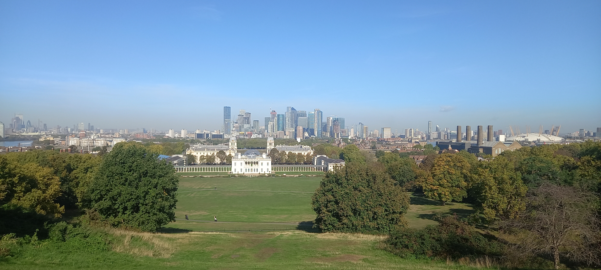
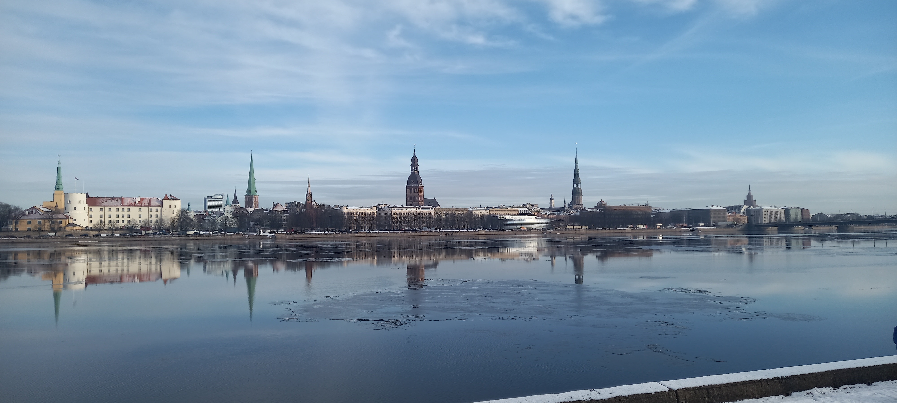
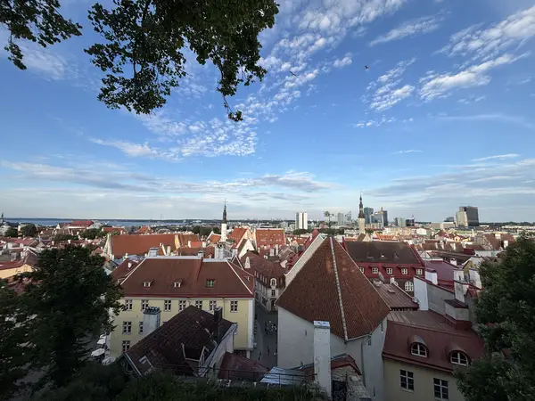
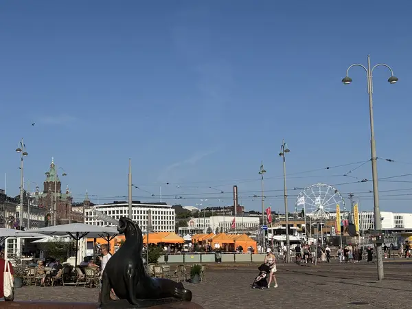
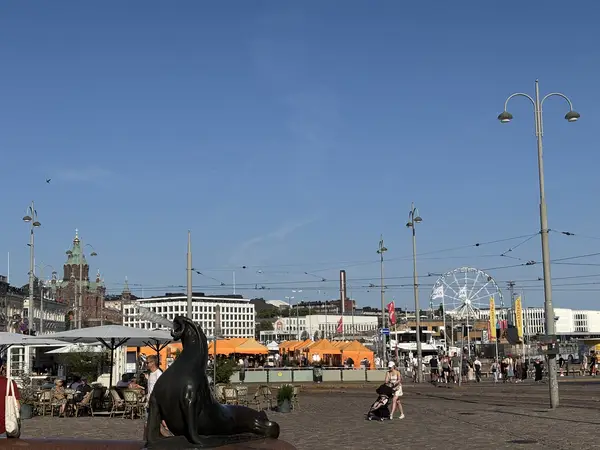
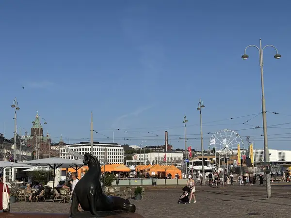

Travels By Trish
Home
Past Trips
Future Trips
Contact Us
Past Trips
Browse through my pervious trips for inspriation

Greenwich, London

Riga, Lativa

Tallinn, Estonia
Valletta, Malta

Helsinki City Center, Finland
The Catlins, New Zealand

 Valletta, Malta

Helsinki City Center, Finland
Valletta, Malta

Helsinki City Center, Finland
 The Catlins, New Zealand
The Catlins, New Zealand